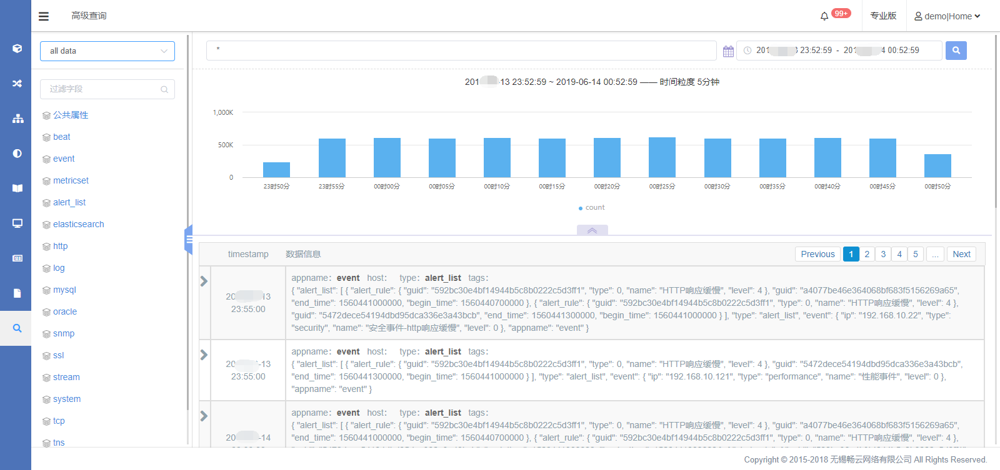
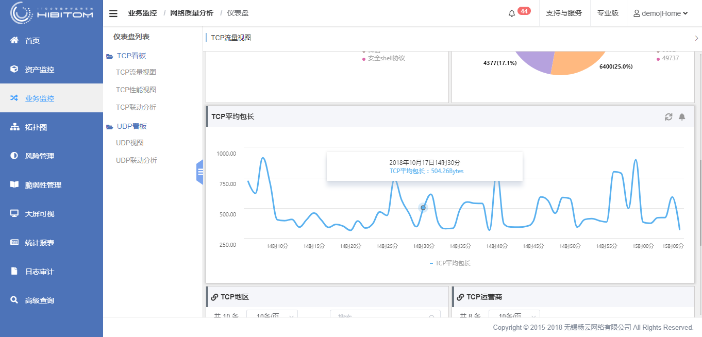
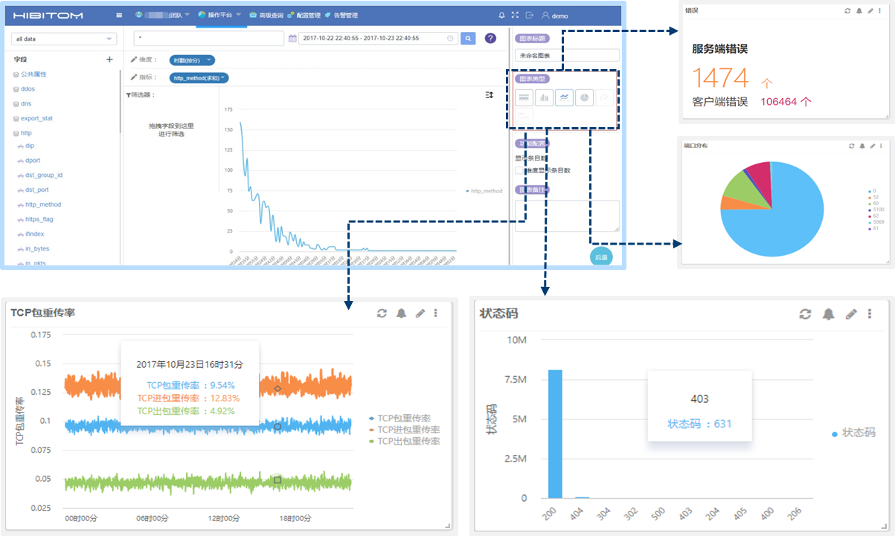
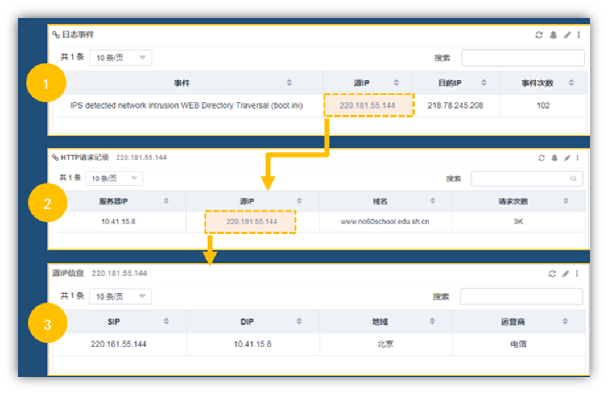
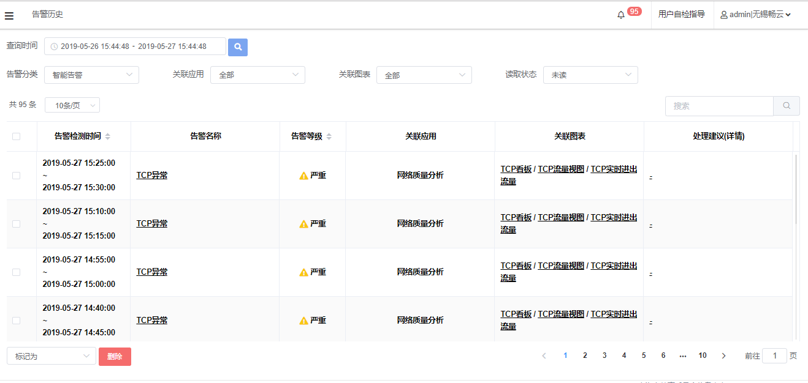
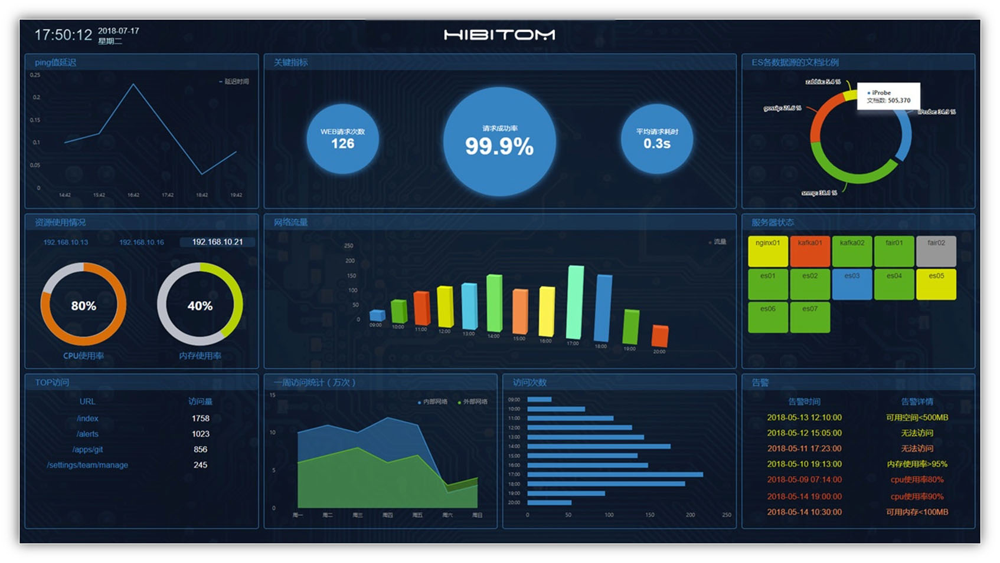

Toggle navigation
首页
(current)
产品
HIBITOM
IT全局智能运维分析系统
Dcheck
网络攻击检测与防护系统
iProbe
感知应用的网络性能监控系统
NAMD
网络故障检测诊断平台
解决方案
全链路运维监控解决方案
DDoS攻击检测与防护解决方案
全网网络性能诊断解决方案
客户案例
医疗行业
东莞第五人民医院
陕西肿瘤医院
教育行业
某市教育委员会信息中心
东华大学
金融行业
拉卡拉
汇付天下
互联网服务
携程旅行
世纪互联
服务与支持
关于
关于我们
新闻动态
加入我们
HIBITOM
IT全局智能运维分析系统
IT全局智能运维分析系统
以网络大数据的深度分析为基础，全方位监控和分析IT系统关联的客户终端、网络设备、服务器、网络流量、网络质量、应用日志、软件性能以及用户行为和体验，为数据中心的智能化运维和管理提供一站式、全方位的监控产品和服务， 实现无人值守的自动化、智能化运维，降低企业成本，提升企业效益。产品用大数据技术融合了ITOM和ITOA（IT运维和运营分析），高度集合了传统 NPM（网络性能监控）、APM（应用性能监控）和IPM（基础设施性能监控）中的典型功能。
主要功能
多源数据整合
可接收iProbe、Dcheck、NAMD这三套系统的网络流日志、DDoS攻击检测日志、网络拨测日志，以及其他第三方的设备或应用日志。


全链路监测
结合设备监控、应用监控和网络监控的多源监控手段，实现对从用户端到服务器的全链路应用交付进行“端到端”的监测。
可定义业务看板
具有图表类型自定义功能，包括：柱状图、饼状图、折线图、指标卡、计量图、表格；通过托拉拽的形式生成图表。并可对图表数据自定义，可定义聚合字段和统计字段，提供运算函数工具使用户定义想要的数据结果，丰富数据分析手段。


数据关联和挖掘
基于大数据平台，可实现对多源数据中的相关字段进行关联分析和统计；应对不同的业务场景，建立相应的关联关系，
形成下钻分析过程。
自动运维和智能阈值
基于采集分析的数据，进行基线学习，跟踪链路质量、实时在线用户数、用户体验、业务响应等状态趋势，形成历史基线，实时跟踪对比，并提供智能阈值调整，发现异常，提前预警，识别隐患事件，做到事前处理。


大屏展示
定制化的页面大屏展示，提供信息的综合展示，辅助业务决策，提升应急处理水平。
产品优势
打通数据源立体运维
打通网络、数据库、应用各层次数据，
一站式立体化运维
底层监控性能优异
在网络协议层（TCP等）之下进行监控，
全数据而非抽样数据监控，性能优异
应用协议分析全面准确
识别应用协议，而非简单通过应用
“特征串”来推测应用
智能故障排查和自学习阈值
集成专家经验的故障排查路径；自学习
的智能阈值来控制告警参数